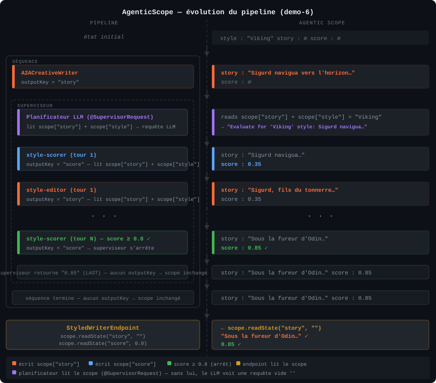

LangChain4j-CDI
Generative AI natively injectable into Jakarta EE — Build production-ready AI agents with CDI, MicroProfile and LangChain4j on WildFly.


What you will build
In this hands-on workshop, you will progressively build six AI-powered applications using LangChain4j-CDI, transforming Jakarta EE interfaces into injectable AI agents with a single annotation.
Exercise 1: AI Agent
Create an injectable Viking skald with @RegisterAIService, streaming responses and multimodal vision.
Exercise 2: Resilience and observability
Add MicroProfile Fault Tolerance (@Retry, @Timeout, @CircuitBreaker) and OpenTelemetry.
Exercise 3: MCP Integration
Connect your AI agent to external tools via the Model Context Protocol (MCP) — "JDBC for AI".
Exercise 4: Guardrails
Add guardrails on your Viking skald's input and output: English-only language enforcement and no fantasy races.
Exercise 5: A2A Protocol
Orchestrate multiple AI agents via the Agent-to-Agent protocol: a writer, a scorer, and an orchestrator with a declarative review loop.
Exercise 6: Supervisor Agent
Replace the explicit loop with an LLM supervisor using @RegisterSupervisorAgent: the model decides on its own when quality is reached.
Each exercise has a base/ module (skeleton with TODOs) and a solution/ module (complete reference). Work in base/ and follow the steps. If you get stuck, the solution/ is always there as a safety net.
Prerequisites
Required software
| Tool | Version | Purpose |
|---|---|---|
| JDK | 21+ | Java development |
| Maven | 3.9+ | Build tool |
| IDE | Apache NetBeans / IntelliJ IDEA / VS Code | Code editor |
| curl | any | API testing |
| Mistral AI API Key or Ollama | — | LLM provider — remote (Mistral AI, free) or local (Ollama) |
| Docker / Podman | any | Grafana LGTM stack (Exercise 2 only) |
1. Get the source code
git clone https://github.com/ehsavoie/langchain4j-cdi-lab-2026.git
cd langchain4j-cdi-lab-2026/demo-project2. Choose your LLM provider
Option A — Mistral AI (remote): sign up for free at console.mistral.ai to get an API key. No local installation required.
Option B — Ollama (local): install Ollama, then download the models:
# In a first terminal (keep running):
ollama serve
# In a second terminal:
ollama pull ministral-3:3b # exercises 1, 2, 3, 4
ollama pull qwen2.5:7b # exercise 5 (A2A — always required)Ollama must remain active at http://localhost:11434 throughout the workshop.
Each module contains a microprofile-config.properties file structured like this:
# ---- Option A: Mistral AI (remote) ----
dev.langchain4j.cdi.plugin.my-model.class=...MistralAiChatModel
dev.langchain4j.cdi.plugin.my-model.config.api-key=${MISTRAL_API_KEY}
dev.langchain4j.cdi.plugin.my-model.config.model-name=mistral-small-latest
# ---- Option B: Ollama (local) ----
# dev.langchain4j.cdi.plugin.my-model.class=...OllamaChatModel
# dev.langchain4j.cdi.plugin.my-model.config.base-url=http://localhost:11434
# dev.langchain4j.cdi.plugin.my-model.config.model-name=ministral-3:3b
dev.langchain4j.cdi.plugin.my-model.config.temperature=0.9
dev.langchain4j.cdi.plugin.my-model.config.log-requests=trueBy default, Option A (Mistral AI) is active. To switch to Ollama:
- Comment out the 3 lines of Option A (add
#in front) - Uncomment the 3 lines of Option B (remove the
#)
The common properties (temperature, log-requests, etc.) are below and remain unchanged — they apply regardless of the chosen provider.
Option A: Configure Mistral AI (remote)
Sign up at console.mistral.ai and follow these steps to get a free API key:
Step 1: Access API Keys
From the Mistral AI Studio home page, click on your profile icon (top right corner), then select API Keys.

Step 2: Choose a plan
On the API Keys page, you will see a warning: "No plan is currently active on this organization, the API keys will not be active." Click on Choose a plan to activate your keys.

Without an active plan, your API keys will be created but will not work. You will get an Unauthorized error when calling the API.
Step 3: Select the free "Experiment" plan
Choose the Experiment plan (left side) — it is completely free and gives you access to all state-of-the-art AI models. Click on "Experiment for free".

Step 4: Accept terms and subscribe
Check the box to accept the terms of service and privacy policy, then click on Subscribe.

You will then be asked to provide your phone number to receive an SMS activation code. This is required to activate the free Experiment plan.
Step 5: Create and export your API key
Once your plan is activated, go back to the API Keys page and click on "Create new key". Copy the key immediately — you will not be able to see it again.

Then export it in your terminal:
# Linux / macOS
export MISTRAL_API_KEY=your-api-key-here
# Windows (PowerShell)
$env:MISTRAL_API_KEY="your-api-key-here"If you chose Ollama, skip the entire Mistral AI section above. No API key needed — just comment/uncomment the blocks in microprofile-config.properties as explained above.
3. WildFly (automatic)
WildFly 39 is automatically downloaded and provisioned by the Maven plugin. No manual installation required:
# Build, provision WildFly and deploy the application
cd demo-1-ai-agent/solution
mvn clean install
# Start the server
./target/server/bin/standalone.sh # Linux / macOS
target\server\bin\standalone.bat # Windowsmvn clean install provisions WildFly and deploys the application to target/server/. Then start the server with the appropriate script for your system.
3b. Configure the LLM provider in the solution
Before verifying your installation, make sure the file demo-1-ai-agent/solution/src/main/resources/META-INF/microprofile-config.properties is configured for your provider:
- Option A — Mistral AI (remote): this is the default configuration. Simply verify that the
MISTRAL_API_KEYvariable is exported in your terminal. - Option B — Ollama (local): for each block (my-model, my-streaming-model, vision-model), comment out the 3 lines of Option A and uncomment the 3 lines of Option B.
# Example for my-model — Option B: Ollama
# (comment out the 3 Mistral AI lines above, then uncomment these)
dev.langchain4j.cdi.plugin.my-model.class=dev.langchain4j.model.ollama.OllamaChatModel
dev.langchain4j.cdi.plugin.my-model.config.base-url=http://localhost:11434
dev.langchain4j.cdi.plugin.my-model.config.model-name=ministral-3:3bThe file contains 3 models (my-model, my-streaming-model, vision-model). Remember to switch all three if you use Ollama.
4. Verify your installation
# Build all modules to download dependencies
cd demo-project
mvn clean install -DskipTests
# Quick verification test
cd demo-1-ai-agent/solution
mvn clean install
./target/server/bin/standalone.sh # Linux / macOS
target\server\bin\standalone.bat # Windows
# In another terminal:
curl -X POST -H "Content-Type: text/plain" \
-d "Sing me a heroic song" \
http://localhost:8080/demo-1/api/chatYou can also test directly in your browser by opening http://localhost:8080/demo-1 — the web interface lets you chat with the Viking skald.
If you get a response from the AI Viking skald (via curl or via the browser), your environment is correctly configured. Stop the server (Ctrl+C) and move on to the exercises.
Architecture overview
LangChain4j-CDI is a CDI extension that bridges LangChain4j (the Java AI framework) and Jakarta EE / MicroProfile servers. It transforms annotated interfaces into injectable AI agents.
How it works
The CDI extension scans @RegisterAIService interfaces at startup
For each interface: chatModelName, tools, chatMemoryProviderName, contentRetrieverName
A LangChain4j proxy is wrapped into a managed CDI bean
The LLMConfig SPI reads from MicroProfile Config: dev.langchain4j.cdi.plugin.<name>.class=...
@Inject Assistant assistant; — it just works
Before / after
Without CDI (verbose)
ChatModel model =
MistralAiChatModel.builder()
.apiKey(System.getenv("MISTRAL_API_KEY"))
.modelName("pixtral-large-latest")
.temperature(0.3)
.maxTokens(1000)
.build();
ChatMemory memory =
MessageWindowChatMemory.builder()
.maxMessages(20).build();
Assistant assistant =
AiServices.builder(Assistant.class)
.chatLanguageModel(model)
.chatMemory(memory)
.tools(new VikingTools())
.build();With CDI (clean)
@RegisterAIService(
chatModelName = "my-model",
tools = VikingTools.class)
public interface Assistant {
@SystemMessage("You are a
Viking expedition guide")
String chat(
@UserMessage String message);
}
// In your REST endpoint:
@Inject
Assistant assistant;LangChain4j-CDI vs Spring AI
If you come from the Spring world, you may know Spring AI. Both frameworks offer similar capabilities — here is how they compare in terms of API style:
Spring AI is excellent in its ecosystem. LangChain4j-CDI does the same job with the Jakarta EE idiom: declarative, injectable, portable.
☘ Spring AI / Spring Boot 3.x
// Configuration bean
@Configuration
public class AssistantConfig {
@Bean
ChatClient chatClient(
ChatClient.Builder b,
VectorStore vs,
ChatMemory mem) {
return b
.defaultSystem("You are helpful")
.defaultAdvisors(
new QuestionAnswerAdvisor(vs),
new MessageChatMemoryAdvisor(mem))
.defaultTools(new WeatherTools())
.build();
}
}
// Service that uses it
@Service
public class AssistantService {
private final ChatClient client;
String chat(String user, String msg) {
return client.prompt().user(msg)
.advisors(a -> a.param(CONV_ID, user))
.call().content();
}
}~25 lines · 2 classes · 1 builder chain
◆ LangChain4j-CDI / Jakarta EE
// That's it. One interface.
@RegisterAIService(
chatMemoryProviderSupplier
= MemoryProvider.class,
tools = WeatherTools.class,
retrievalAugmentor = RagAugmentor.class)
public interface Assistant {
@SystemMessage("You are helpful")
String chat(
@MemoryId String user,
@UserMessage String msg);
}
// Inject anywhere. Done.
@Inject
Assistant assistant;
assistant.chat("yann", "Bonjour !");~10 lines · 1 interface · 0 boilerplate
Both approaches are valid. The difference: with LangChain4j-CDI, there is no configuration code to write. CDI discovers the interface, creates the synthetic bean, resolves dependencies — pure convention over configuration.
Dual CDI extension support
LangChain4j-CDI provides both types of extensions, so it works on any CDI server:
| Extension type | Processing | Servers |
|---|---|---|
| Portable Extension | Runtime | WildFly, Payara, GlassFish, Liberty |
| Build Compatible Extension | Compile-time | Quarkus, Helidon |
Project structure
├── pom.xml ← Parent POM (centralized versions)
├── demo-1-ai-agent/ ← Injectable AI Agent
│ ├── base/ ← Skeleton with TODOs (your workspace)
│ └── solution/ ← Complete reference
├── demo-2-ft-telemetry/ ← Memory + RAG + Tools + FT + Telemetry
│ ├── base/
│ └── solution/
├── demo-3-mcp/ ← MCP Integration
│ ├── mcp-server/ ← Standalone MCP server (Helidon 4)
│ ├── base/
│ └── solution/
└── demo-4-guardrails/ ← Input & Output Guardrails
├── base/ ← Skeleton with TODOs (your workspace)
└── solution/
Introduction slides
Presentation of the context, the speakers and the workshop program.
In the presentation: → next slide · S notes · O overview · Esc close fullscreen
Exercise 1: Injectable AI Agent
Key message: "From 15 lines of boilerplate code to 1 annotation + 1 configuration property"
Create a simple AI chatbot using @RegisterAIService, inject it into a JAX-RS endpoint and test it. Then add streaming and multimodal vision capabilities.
The ChatResource.java file in the base/ module directly instantiates MistralAiChatModel in its @PostConstruct method. It ignores the microprofile-config.properties file and requires the MISTRAL_API_KEY environment variable to work.
If you are using Ollama, the base project will not work until you complete steps 1 to 3 of this exercise, which replace the hardcoded code with CDI injection + MicroProfile configuration.
cd demo-project/demo-1-ai-agent/base
# Open this directory in your IDEKey files
| File | Purpose |
|---|---|
ChatAssistant.java | AI service interface (your main task) |
ChatAssistantStreaming.java | Streaming AI service |
ChatResource.java | JAX-RS REST endpoint |
ImageAnalyzerServlet.java | Multimodal vision servlet |
microprofile-config.properties | LLM configuration |
Open ChatAssistant.java. Your task: transform it into an injectable AI agent by adding @RegisterAIService on the interface.
Add @RegisterAIService on the interface
Show solution
@SuppressWarnings("CdiManagedBeanInconsistencyInspection")
@RegisterAIService(chatModelName = "my-model")
public interface ChatAssistant {
@SystemMessage("""
You are a Viking skald who tells jokes and funny stories in the great hall.
Your jokes are about clumsy warriors, raids gone wrong,
drunken feasts, Norse gods and their antics.
Your jokes are short, punchy and make everyone laugh.
You can also tell humorous anecdotes about Viking life.
""")
String chat(@UserMessage String userMessage);
}@RegisterAIServicetells the CDI extension to create an injectable bean for this interfacechatModelName = "my-model"references the model configuration inmicroprofile-config.properties@SystemMessagedefines the AI personality and behavior@UserMessagemarks the parameter as user input
Open ChatResource.java. It contains a @PostConstruct init() method that manually instantiates models and AI services — this is exactly what CDI replaces. Your task: remove this boilerplate and replace it with injection.
Replace fields and @PostConstruct with CDI injection
Show solution
import jakarta.inject.Inject;
@Path("/chat")
@ApplicationScoped
public class ChatResource {
@Inject
ChatAssistant assistant;
@Inject
ChatAssistantStreaming streamingAssistant;
// Remove the entire @PostConstruct init() method below
@POST
@Consumes(MediaType.TEXT_PLAIN)
@Produces(MediaType.TEXT_PLAIN)
public String chat(String message) {
return assistant.chat(message);
}
// The /stream endpoint is already implemented, nothing to change here.
}The business code has no dependency on LangChain4j. The only import is your own interface. Change AI frameworks tomorrow? Change the implementation, not the business code.
Open src/main/resources/META-INF/microprofile-config.properties. The configuration is already set up — just verify that the correct provider is active.
By default, Option A (Mistral AI) is already uncommented:
Show solution
# ---- Option A: Mistral AI (remote) ---- [ACTIVE BY DEFAULT]
dev.langchain4j.cdi.plugin.my-model.class=dev.langchain4j.model.mistralai.MistralAiChatModel
dev.langchain4j.cdi.plugin.my-model.config.api-key=${MISTRAL_API_KEY}
dev.langchain4j.cdi.plugin.my-model.config.model-name=mistral-small-latest
# ---- Option B: Ollama (local) ---- [commented by default]
#dev.langchain4j.cdi.plugin.my-model.class=dev.langchain4j.model.ollama.OllamaChatModel
#dev.langchain4j.cdi.plugin.my-model.config.base-url=http://localhost:11434
#dev.langchain4j.cdi.plugin.my-model.config.model-name=ministral-3:3b
dev.langchain4j.cdi.plugin.my-model.config.temperature=0.9
dev.langchain4j.cdi.plugin.my-model.config.log-requests=trueIn microprofile-config.properties, comment out the 3 lines of Option A and uncomment the 3 lines of Option B. The common properties (temperature, log-requests...) remain unchanged.
Builder properties must use the .config. prefix: dev.langchain4j.cdi.plugin.<name>.config.<prop>=value. Without .config., the property is silently ignored.
Build and start
mvn clean install
./target/server/bin/standalone.sh # Linux / macOS
target\server\bin\standalone.bat # Windows# In another terminal:
curl -X POST -H "Content-Type: text/plain" \
-d "Tell me a Viking joke!" \
http://localhost:8080/demo-1/api/chatOpen ChatAssistantStreaming.java. Add @RegisterAIService on the interface:
Add @RegisterAIService on the interface
Show solution
@SuppressWarnings("CdiManagedBeanInconsistencyInspection")
@RegisterAIService(streamingChatModelName = "my-streaming-model")
public interface ChatAssistantStreaming {
@SystemMessage("""
You are a Viking skald, a storyteller and poet of the great hall.
You sing epic tales of glorious battles, daring raids,
the bravery of warriors, longship voyages and the road to Valhalla.
Your songs are rhythmic, heroic and full of honor.
""")
TokenStream chatStream(@UserMessage String userMessage);
}In ChatResource.java, the GET /stream endpoint is already implemented. It will be functional as soon as the streamingAssistant injection is in place (step 2). Nothing else to change here.
The streaming model configuration is also already present in microprofile-config.properties — verify that the correct provider is active (Option A or B):
Show solution
# ---- Option A: Mistral AI (remote) ---- [ACTIVE BY DEFAULT]
dev.langchain4j.cdi.plugin.my-streaming-model.class=dev.langchain4j.model.mistralai.MistralAiStreamingChatModel
dev.langchain4j.cdi.plugin.my-streaming-model.config.api-key=${MISTRAL_API_KEY}
dev.langchain4j.cdi.plugin.my-streaming-model.config.model-name=mistral-small-latest
# ---- Option B: Ollama (local) ----
#dev.langchain4j.cdi.plugin.my-streaming-model.class=dev.langchain4j.model.ollama.OllamaStreamingChatModel
#dev.langchain4j.cdi.plugin.my-streaming-model.config.base-url=http://localhost:11434
#dev.langchain4j.cdi.plugin.my-streaming-model.config.model-name=ministral-3:3bComment out Option A of the streaming model and uncomment Option B in microprofile-config.properties.
Open ImageAnalyzerServlet.java and inject a vision model:
Show solution
@WebServlet("/uploadServlet")
@MultipartConfig
public class ImageAnalyzerServlet extends HttpServlet {
@Inject
@Named("vision-model")
ChatModel visionModel;
@Override
protected void doPost(HttpServletRequest request,
HttpServletResponse response) throws ... {
Part file = request.getPart("file");
UserMessage userMessage = UserMessage.from(
TextContent.from("Describe this image in detail."),
ImageContent.from(encodeBase64(file.getInputStream()),
file.getContentType())
);
ChatResponse answer = visionModel.chat(userMessage);
response.getWriter().write(answer.aiMessage().text());
}
}And the vision model configuration:
dev.langchain4j.cdi.plugin.vision-model.class=\
dev.langchain4j.model.mistralai.MistralAiChatModel
dev.langchain4j.cdi.plugin.vision-model.config.api-key=${MISTRAL_API_KEY}
dev.langchain4j.cdi.plugin.vision-model.config.model-name=pixtral-large-latestSame principle: comment out Option A of the vision model and uncomment Option B. The already downloaded Ollama model (ministral-3:3b) will be used.
# Standard chat
curl -X POST -H "Content-Type: text/plain" \
-d "Tell me a Viking joke!" \
http://localhost:8080/demo-1/api/chat
# Streaming (open in browser)
# http://localhost:8080/demo-1/stream.html
# Image analysis (open in browser)
# http://localhost:8080/demo-1/image.html
# Health check
curl http://localhost:8080/demo-1/api/chat/health- Standard chat returns a response from the Viking skald
- Streaming displays tokens arriving in real time
- Image upload returns an AI-generated description
Switch to the solution: cd ../solution && mvn clean install then ./target/server/bin/standalone.sh (Linux/macOS) or target\server\bin\standalone.bat (Windows)
Exercise 2: Fault Tolerance and Telemetry
Key message : "MicroProfile annotations work on AI services because they are CDI beans"
Start with a working Viking expedition guide that already has memory, RAG and tools. Your task: add MicroProfile Fault Tolerance annotations to make it production-ready, then observe it with OpenTelemetry.
Start by launching the Grafana LGTM stack (Loki + Grafana + Tempo + Mimir) in a dedicated terminal — it will be ready when you need it for telemetry:
# Start the full LGTM stack (Loki + Grafana + Tempo + Mimir)
# with the built-in OpenTelemetry collector — keep running in the background
podman run -p 3000:3000 -p 4317:4317 -p 4318:4318 --rm -ti grafana/otel-lgtm
# Or with Docker
docker run -p 3000:3000 -p 4317:4317 -p 4318:4318 --rm -ti grafana/otel-lgtmThen launch the application in another terminal:
cd demo-project/demo-2-ft-telemetry/base
mvn clean install
./target/server/bin/standalone.sh # Linux / macOS
target\server\bin\standalone.bat # WindowsOpen your browser to http://localhost:8080/demo-2 to test the application.
What already works
The base module is pre-wired with these features:
Conversation memory
@MemoryId provides per-session memory via ChatMemoryProviderBean. Each browser tab gets its own conversation.
RAG
ExpeditionDetailsProvider ingests Viking expedition data into an in-memory vector store using Mistral embeddings.
Tools
VikingTools is a CDI bean with 5 @Tool methods: list expeditions, enroll warrior, cancel, check availability, view enrollments.
Test that everything works before adding fault tolerance:
curl -X POST -H "Content-Type: text/plain" \
-H "X-Session-Id: test-123" \
-d "What expeditions are available?" \
http://localhost:8080/demo-2/api/chatOpen ChatAssistant.java. The AI service interface already has @RegisterAIService with memory, RAG and tools. Add the @Retry annotation:
Show solution
import org.eclipse.microprofile.faulttolerance.Retry;
@RegisterAIService(chatModelName = "my-model",
chatMemoryProviderName = "my-memory",
contentRetrieverName = "my-rag",
tools = VikingTools.class)
public interface ChatAssistant {
@Retry(maxRetries = 3, delay = 1000)
String chat(@MemoryId String sessionId,
@UserMessage String message);
}Since @RegisterAIService creates a CDI bean, all MicroProfile interceptors apply. The CDI container wraps the proxy with the Fault Tolerance interceptor — no binding code needed.
Stack the Fault Tolerance annotations:
Show solution
import org.eclipse.microprofile.faulttolerance.*;
import java.time.temporal.ChronoUnit;
@RegisterAIService(chatModelName = "my-model",
chatMemoryProviderName = "my-memory",
contentRetrieverName = "my-rag",
tools = VikingTools.class)
public interface ChatAssistant {
@Retry(maxRetries = 3, delay = 1000)
@Timeout(value = 30, unit = ChronoUnit.SECONDS)
@Fallback(fallbackMethod = "chatFallback")
String chat(@MemoryId String sessionId,
@UserMessage String message);
default String chatFallback(String sessionId, String message) {
return "I'm sorry, our AI service is temporarily unavailable. "
+ "Please try again in a moment. "
+ "Our team has been notified.";
}
}Add the last piece — the circuit breaker prevents overloading a failing service:
Show solution
@Retry(maxRetries = 3, delay = 1000)
@Timeout(value = 30, unit = ChronoUnit.SECONDS)
@Fallback(fallbackMethod = "chatFallback")
@CircuitBreaker(requestVolumeThreshold = 5, failureRatio = 0.5)
String chat(@MemoryId String sessionId,
@UserMessage String message);Hot reload: save and run mvn package (or let your IDE compile automatically).
Now that the annotations are in place, open pom.xml and uncomment the langchain4j-cdi-fault-tolerance dependency (block marked TODO). Without it, the annotations are silently ignored.
<dependency>
<groupId>dev.langchain4j.cdi.mp</groupId>
<artifactId>langchain4j-cdi-fault-tolerance</artifactId>
</dependency>Simulate a failure: cut the wifi to simulate a network issue, then send requests. If you are using Ollama, simply stop the server. You should see retry attempts, then the fallback message. Restore the connection (or restart Ollama) and the circuit breaker recovers automatically.
The Grafana LGTM stack is already running since the beginning of the exercise. The telemetry configuration is already in microprofile-config.properties:
Show solution
# OpenTelemetry
otel.exporter.otlp.endpoint=http://localhost:4318
otel.service.name=demo-2-langchain4j-cdi
otel.traces.exporter=otlp
otel.metrics.exporter=otlp
# LangChain4j-CDI Telemetry Listeners
dev.langchain4j.cdi.plugin.my-model.config.listeners=\
dev.langchain4j.cdi.telemetry.SpanChatModelListener,\
dev.langchain4j.cdi.telemetry.MetricsChatModelListenerSend a few chat requests, then open http://localhost:3000 (Grafana). Navigate to Explore → Tempo and search for the service demo-2-langchain4j-cdi.
You will see distributed traces showing:
- LLM call latency
- Token count (input/output)
- Tool calls and their duration
- RAG retrieval steps
# Chat with session
curl -X POST -H "Content-Type: text/plain" \
-H "X-Session-Id: test-456" \
-d "What expeditions are available?" \
http://localhost:8080/demo-2/api/chat
# Enroll a warrior
curl -X POST -H "Content-Type: text/plain" \
-H "X-Session-Id: test-456" \
-d "Enroll Erik Bloodaxe for the first expedition" \
http://localhost:8080/demo-2/api/chat
# Inspect memory
curl "http://localhost:8080/demo-2/api/chat/memory?sessionId=test-456"- Memory preserves context between messages in the same session
- RAG retrieves relevant expedition information
- Tools execute enrollments, cancellations and queries
- The fallback responds gracefully when the AI is unavailable
- Traces appear in Grafana/Tempo
Exercise 3: MCP Integration
Key message : "MCP is the JDBC of AI — your agents communicate with any tool server"
Connect an AI agent to an external MCP (Model Context Protocol) server. The MCP server provides rune-rolling tools, and your AI agent hosts a Hnefatafl game at the Grand Thing via the protocol.
What is MCP?
The Model Context Protocol is an open standard for connecting AI agents to external tools. Think of it as a universal adapter: one protocol, any tool server, any language.
@RegisterAIService toolProviderName JSON-RPC via Streamable HTTP
First, build and start the external dice MCP server:
# Build and start the MCP server with Helidon 4 (listens on port 8090)
cd demo-project/demo-3-mcp/mcp-server
mvn clean package
java -jar target/casino-dice-roller.jarThe MCP server is a MicroProfile application powered by LangChain4j-CDI MCP Server and Helidon 4. It automatically exposes an /mcp endpoint that speaks the MCP protocol (JSON-RPC 2.0 over HTTP Streamable). The roll tool generates random dice results for the Viking game.
Keep the MCP server running in a separate terminal. The AI agent will connect to it via the MCP endpoint on localhost:8090/mcp.
Test with MCP Inspector
Before connecting the MCP server to the AI agent, you can verify it works using the MCP Inspector — a visual debugging tool for MCP servers. In a new terminal:
# Launch the MCP Inspector
npx @modelcontextprotocol/inspectorThis opens a web interface (usually at http://localhost:6274). Configure the connection:
- Transport Type :
Streamable HTTP - URL :
http://localhost:8090/mcp
Click on Connect, then on the Tools tab and on the roll tool to inspect and test it interactively:

- The connection status shows Connected
- The
rolltool appears in the Tools list - Set
numberOfDiceto2, click Run Tool, and verify that you get dice results
Open HnefataflJarlAI.java in demo-3-mcp/base/:
Show solution
@RegisterAIService(chatModelName = "mistral",
toolProviderName = "mcp",
chatMemoryProviderName = "my-memory")
public interface HnefataflJarlAI {
@SystemMessage("""
You are Ragnar the Skald, the Jarl hosting Hnefatafl
at the Grand Thing of the Northern warriors.
RULES: Cast 2 rune stones with roll(numberOfDice=2).
OPENING CAST:
- 7 or 11: Odin's Favour -- warrior WINS!
- 2, 3 or 12: Curse of the Norns -- warrior LOSES!
- Other: that number becomes THE MARKED RUNE.
RUNE PHASE: hit the rune = WIN, roll 7 = Ragnarök = LOSE.
REQUIRED FORMAT:
RUNES: [X, Y]
TOTAL: [sum]
DESTIN: [what happened]
Respond in English.
""")
String play(@UserMessage String playerAction);
}toolProviderName = "mcp" connects this agent to the McpToolProvider bean, which automatically discovers the rune-rolling tools from the external MCP server.
Open microprofile-config.properties and uncomment the MCP configuration:
Show solution
# Chat Model
# ---- Option A: Mistral AI (remote) ----
dev.langchain4j.cdi.plugin.mistral.class=dev.langchain4j.model.mistralai.MistralAiChatModel
dev.langchain4j.cdi.plugin.mistral.config.api-key=${MISTRAL_API_KEY}
dev.langchain4j.cdi.plugin.mistral.config.model-name=mistral-small-latest
# MCP Transport (Streamable HTTP to the dice MCP server)
dev.langchain4j.cdi.plugin.ssetransport.class=\
dev.langchain4j.mcp.client.transport.http.StreamableHttpMcpTransport
dev.langchain4j.cdi.plugin.ssetransport.config.url=http://localhost:8090/mcp
dev.langchain4j.cdi.plugin.ssetransport.config.logRequests=true
dev.langchain4j.cdi.plugin.ssetransport.config.logResponses=true
# MCP Client
dev.langchain4j.cdi.plugin.mcpclient.class=dev.langchain4j.mcp.client.DefaultMcpClient
dev.langchain4j.cdi.plugin.mcpclient.config.transport=lookup:@ssetransport
# MCP Tool Provider (named "mcp" for @RegisterAIService)
dev.langchain4j.cdi.plugin.mcp.class=dev.langchain4j.mcp.McpToolProvider
dev.langchain4j.cdi.plugin.mcp.config.mcpClients=lookup:@mcpclientSame principle: comment out Option A of the Chat Model and uncomment Option B. The MCP config (transport, client, tool provider) remains the same.
lookup:@ssetransport references another CDI bean by its configuration name. This is how you wire beans together using configuration only — no Java code needed for the plumbing.
Open GameResource.java :
Show solution
@Path("/game")
@ApplicationScoped
public class GameResource {
@Inject
HnefataflJarlAI gameMaster;
@POST
@Path("/play")
@Consumes(MediaType.TEXT_PLAIN)
@Produces(MediaType.TEXT_PLAIN)
public String play(String playerAction) {
return gameMaster.play(playerAction);
}
@GET
@Path("/start")
@Produces(MediaType.TEXT_PLAIN)
public String start() {
return gameMaster.play(
"Hi! I'm ready for a game of Hnefatafl!");
}
}# Make sure the MCP server is running on port 8090!
# Build and start
cd demo-project/demo-3-mcp/base
mvn clean install
./target/server/bin/standalone.sh # Linux / macOS
target\server\bin\standalone.bat # Windows
# Start a game
curl http://localhost:8080/demo-3/api/game/start
# Roll the dice
curl -X POST -H "Content-Type: text/plain" \
-d "Cast the runes!" \
http://localhost:8080/demo-3/api/game/play
# Open the web interface
# http://localhost:8080/demo-3/- The AI agent calls the
rolltool from the MCP server via Streamable HTTP - The rune results are returned in RUNES: [X, Y] format
- Ragnar the Skald announces victories, curses and marked runes in Viking style
- The web interface displays visual dice with animated dots
You have built three AI-powered applications with LangChain4j-CDI: a Viking skald, a resilient expedition guide, and a Hnefatafl game integrated via MCP. All with standard Jakarta EE patterns.
Exercise 4: Guardrails — Safety rails for your agent
Key message : "Guardrails are CDI beans — they benefit from dependency injection like all your components"
Add four guardrails around your Viking skald: two on the input (validate the request before calling the LLM) and two on the output (validate the response before returning it). The agent only accepts English and refuses any mention of fantasy races.
cd demo-project/demo-4-guardrails/base
# Open this directory in your IDEConcept: InputGuardrail vs OutputGuardrail
InputGuardrail
Runs before calling the LLM. If the guardrail fails, the LLM is never called — saving time and tokens.
InputGuardrailResult validate(
UserMessage userMessage)OutputGuardrail
Runs after the LLM response. If the guardrail fails, an exception is thrown — the calling code must handle it.
OutputGuardrailResult validate(
AiMessage responseFromLLM)Key files
| File | Role | TODO |
|---|---|---|
SkaldAssistant.java | AI service interface | Add @RegisterAIService with guardrail names |
EnglishInputGuardrail.java | Checks that the request is in English | Name, initialize, implement |
EnglishOutputGuardrail.java | Checks that the song is in English | Name, initialize, implement |
NoFantasyRacesInputGuardrail.java | Rejects mentions of dwarves/elves/halflings/dragons in input | Name, implement |
NoFantasyRacesOutputGuardrail.java | Rejects mentions of dwarves/elves/halflings/dragons in output | Name, implement |
ChatResource.java | REST endpoint (already wired) | Nothing — already handles guardrail exceptions |
This exercise uses Mistral AI (like exercise 1). Make sure MISTRAL_API_KEY is exported in your terminal.
@Named
Guardrails are CDI beans referenced by name in @RegisterAIService. Add @Named on each guardrail class.
Show solution
EnglishInputGuardrail.java
import jakarta.inject.Named;
@ApplicationScoped
@Named("english-input") // ← Add this annotation
public class EnglishInputGuardrail implements InputGuardrail {
// ...
}EnglishOutputGuardrail.java
@ApplicationScoped
@Named("english-output")
public class EnglishOutputGuardrail implements OutputGuardrail {
// ...
}NoFantasyRacesInputGuardrail.java
@ApplicationScoped
@Named("fantasy-input")
public class NoFantasyRacesInputGuardrail implements InputGuardrail {
// ...
}NoFantasyRacesOutputGuardrail.java
@ApplicationScoped
@Named("fantasy-output")
public class NoFantasyRacesOutputGuardrail implements OutputGuardrail {
// ...
}LangChain4j-CDI resolves guardrails by their CDI name at startup. The name in @Named("...") must match exactly the strings in inputGuardrailNames and outputGuardrailNames.
The language guardrails (EnglishInputGuardrail and EnglishOutputGuardrail) use Apache Tika to automatically detect a text's language. Initialize the detector in @PostConstruct:
Show solution
import org.apache.tika.langdetect.optimaize.OptimaizeLangDetector;
import org.apache.tika.language.detect.LanguageDetector;
@ApplicationScoped
@Named("english-input")
public class EnglishInputGuardrail implements InputGuardrail {
private LanguageDetector detector;
@PostConstruct
void init() {
detector = new OptimaizeLangDetector().loadModels();
// ↑ Load language detection models from the classpath
}
// ...
}Do the same in EnglishOutputGuardrail.
The bean is @ApplicationScoped: a single instance shared across all requests. The Apache Tika LanguageDetector is not thread-safe — you will need to use synchronized (detector) { ... } during detection.
validate()
Show solution
EnglishInputGuardrail — accept English only
@Override
public InputGuardrailResult validate(UserMessage userMessage) {
String text = userMessage.singleText();
LanguageResult result;
synchronized (detector) {
result = detector.detect(text);
}
// Benefit of the doubt: if Tika is not sure (text too short), let it pass
if (result.isReasonablyCertain() && !"en".equals(result.getLanguage())) {
return failure("Only English is accepted! Speak English to invoke the skald.");
}
return success();
}EnglishOutputGuardrail — verify that the song is in English
@Override
public OutputGuardrailResult validate(AiMessage responseFromLLM) {
String text = responseFromLLM.text();
LanguageResult result;
synchronized (detector) {
result = detector.detect(text);
}
// For output, we are strict: if not certain or not English → failure
if (!result.isReasonablyCertain() || !"en".equals(result.getLanguage())) {
return failure("The song must be in English! The skald must sing in the language of Shakespeare.");
}
return success();
}For input: we apply the benefit of the doubt — a single word like "Odin" is not detectable with certainty, so we accept it. For output: the song is long, Tika is reliable — we reject if not certain or not English.
NoFantasyRacesInputGuardrail — reject forbidden words in input
private static final Set<String> FORBIDDEN_WORDS =
Set.of("dwarf", "dwarves", "elf", "elves", "halfling", "halflings", "dragon", "dragons");
@Override
public InputGuardrailResult validate(UserMessage userMessage) {
String text = userMessage.singleText().toLowerCase();
for (String word : FORBIDDEN_WORDS) {
if (text.contains(word)) {
return failure("Vikings know neither dwarves, elves, halflings, nor dragons! "
+ "Keep your request purely Norse.");
}
}
return success();
}NoFantasyRacesOutputGuardrail — reject forbidden words in output
@Override
public OutputGuardrailResult validate(AiMessage responseFromLLM) {
String text = responseFromLLM.text().toLowerCase();
for (String word : FORBIDDEN_WORDS) {
if (text.contains(word)) {
return failure("The skald's song must not mention dwarves, elves, halflings, or dragons! "
+ "This is a pure Viking saga.");
}
}
return success();
}@RegisterAIService
Open SkaldAssistant.java and uncomment / replace the TODO with the complete annotation:
Show solution
import dev.langchain4j.cdi.spi.RegisterAIService;
import dev.langchain4j.service.SystemMessage;
import dev.langchain4j.service.UserMessage;
@RegisterAIService(
chatModelName = "my-model",
inputGuardrailNames = {"english-input", "fantasy-input"},
outputGuardrailNames = {"english-output", "fantasy-output"})
public interface SkaldAssistant {
@SystemMessage("""
You are a Viking skald who composes epic songs in ENGLISH.
The song must celebrate heroic Norse themes: battles, raids,
Valhalla, Thor, Odin, longships.
Format: 3-4 verses with a powerful chorus.
Tone: epic, heroic, warrior.
""")
String composeSong(@UserMessage String request);
}Guardrails are executed in array order. Here, english-input is evaluated before fantasy-input. If the first fails, the second is not evaluated. The LLM is only called if all input guardrails pass.
Build and start
mvn clean install
./target/server/bin/standalone.sh # Linux / macOS
target\server\bin\standalone.bat # WindowsThe microprofile-config.properties file is already configured with the Mistral AI model. Make sure MISTRAL_API_KEY is set in your environment.
Via curl
# ✅ Valid request in English
curl -X POST -H "Content-Type: text/plain" \
-d "Compose a song about the glory of Odin and Viking battles" \
http://localhost:8080/demo-4/api/song
# ❌ InputGuardrail language: request in French rejected
curl -X POST -H "Content-Type: text/plain" \
-d "Chante les exploits d'Erik le Rouge et ses batailles épiques" \
http://localhost:8080/demo-4/api/song
# ❌ InputGuardrail races: mention of dwarves rejected
curl -X POST -H "Content-Type: text/plain" \
-d "Compose a song about the dwarves who forged Viking weapons" \
http://localhost:8080/demo-4/api/song
# Health check
curl http://localhost:8080/demo-4/api/song/healthVia the web interface
Open http://localhost:8080/demo-4/ to access the interactive interface that displays active guardrails and their error messages.
- A request in English on a Norse theme produces an epic song
- A request in French returns "Only English is accepted!"
- A request mentioning dwarves, elves, halflings, or dragons is rejected
- A single ambiguous word like "Odin" passes (benefit of the doubt)
- HTTP 400 is returned with the message from the guardrail that failed
Switch to the solution: cd ../solution && mvn clean install then ./target/server/bin/standalone.sh (Linux/macOS) or target\server\bin\standalone.bat (Windows)
You have built four AI-powered applications with LangChain4j-CDI. Move on to exercise 5 to discover multi-agent orchestration with the A2A protocol!
Exercise 5: A2A — Multi-agent orchestration
Key message: "MCP connects agents to tools. A2A connects agents to each other — the AI version of microservices"
Build three independent WildFly services communicating via the A2A (Agent-to-Agent) protocol: a Creative Writer that generates stories, a Style Scorer that evaluates style, and an Orchestrator that coordinates everything with an automatic review loop.
cd demo-project/demo-5-a2a/base
# Open this directory in your IDEConcept: MCP vs A2A
MCP (Model Context Protocol)
An agent calls external tools (databases, APIs, files). Agent → tool communication.
Agent → MCP Server → ToolA2A (Agent-to-Agent)
An agent delegates to other specialized agents, each on its own server. Agent ↔ agent communication.
Orchestrator ↔ A2A Agent ↔ A2A AgentStory Forge Architecture
The Story Forge application orchestrates three services:
- Creative Writer (port 8080) — Forges a short Norse saga on a given topic
- Style Scorer (port 8081) — Evaluates the saga's fit with a style (score 0.0–1.0)
- Orchestrator (port 8082) — Coordinates the pipeline: writing → loop (scorer + local editor) until score ≥ 0.8
Key files
a2a-creative-writer
| File | Role | TODO |
|---|---|---|
CreativeWriter.java | LangChain4j AI service | Add @RegisterAIService and @UserMessage |
CreativeWriterAgentCardProducer.java | Describes the agent to the A2A network | Already implemented — observe |
CreativeWriterExecutorProducer.java | Receives and processes A2A requests | Already implemented — observe |
a2a-style-scorer
| File | Role | TODO |
|---|---|---|
StyleScorer.java | LangChain4j AI service | Add @RegisterAIService and @UserMessage |
StyleScorerAgentCardProducer.java | Describes the agent to the A2A network | Already implemented — observe |
StyleScorerExecutorProducer.java | Receives and processes A2A requests | Already implemented — observe |
a2a-orchestrator
| File | Role | TODO |
|---|---|---|
A2ACreativeWriter.java | CDI proxy to the remote Creative Writer | Add @RegisterA2AAgent(a2aServerUrl=...) |
A2AStyleScorer.java | CDI proxy to the remote Style Scorer | Add @RegisterA2AAgent(a2aServerUrl=...) |
StyleEditor.java | Local rewriting agent (Ollama) | Add @RegisterSimpleAgent(chatModelName="ollama") |
StyleReviewLoop.java | Declarative review loop | Add @RegisterLoopAgent(exitConditionName=...) |
ScoreExitCondition.java | CDI exit condition (Predicate<AgenticScope>) | Implement the score ≥ 0.8 test |
StyledWriter.java | Complete SEQUENCE pipeline | Add @RegisterSequenceAgent(subAgentNames=...) |
OrchestratorService.java | Injects and calls the pipeline | Inject StyledWriter and call writeStoryWithStyle() |
StyledWriterEndpoint.java | REST endpoint | Extract the score from the AgenticScope |
This exercise uses Ollama with the qwen2.5:7b model. Make sure Ollama is running (ollama serve) and the model is downloaded (ollama pull qwen2.5:7b).
CreativeWriter
Open a2a-creative-writer/src/main/java/com/example/demo5/writer/CreativeWriter.java and complete the interface:
Show solution
package com.example.demo5.writer;
import dev.langchain4j.cdi.spi.RegisterAIService;
import dev.langchain4j.service.UserMessage;
import dev.langchain4j.service.V;
import jakarta.enterprise.context.ApplicationScoped;
@RegisterAIService(chatModelName = "ollama", scope = ApplicationScoped.class)
public interface CreativeWriter {
@UserMessage("""
You are a Norse skald, a Viking bard who crafts mighty sagas of glory, battle, and adventure.
Forge a short saga no more than 3 sentences around the given topic, in the spirit of the Viking age.
Return only the saga in English and nothing else.
The topic is {{topic}}.
""")
String generateStory(@V("topic") String topic);
}As in previous exercises, @RegisterAIService transforms the interface into an injectable CDI bean. The chatModelName = "ollama" references the configuration in microprofile-config.properties.
StyleScorer
Open a2a-style-scorer/src/main/java/com/example/demo5/scorer/StyleScorer.java and complete the interface:
Show solution
package com.example.demo5.scorer;
import dev.langchain4j.cdi.spi.RegisterAIService;
import dev.langchain4j.service.UserMessage;
import dev.langchain4j.service.V;
import jakarta.enterprise.context.ApplicationScoped;
@RegisterAIService(chatModelName = "ollama", scope = ApplicationScoped.class)
public interface StyleScorer {
@UserMessage("""
You are a seasoned Norse skald elder who judges sagas by the fire of a longhouse.
Give a score between 0.0 and 1.0 for the following saga
based on how well it captures the '{{style}}' style.
Return only the score and nothing else.
The saga is: "{{story}}"
""")
double scoreStyle(@V("story") String story, @V("style") String style);
}doubleLangChain4j automatically parses the LLM response to double. The prompt explicitly asks for a numeric score to facilitate parsing.
Each A2A agent needs two CDI components: an AgentCard (which describes the agent to the network) and an AgentExecutor (which processes requests). These files are already implemented in the base/ module — take a moment to understand their structure.
AgentCard — Creative Writer
Open CreativeWriterAgentCardProducer.java and observe the agentCard() method:
@Produces
@PublicAgentCard
public AgentCard agentCard() {
return AgentCard.builder()
.name("Creative Writer")
.description("Generate a Norse saga based on the given topic")
.url(serverUrl)
.version("1.0.0")
.capabilities(AgentCapabilities.builder()
.streaming(true)
.pushNotifications(false)
.build())
.defaultInputModes(Collections.singletonList("text"))
.defaultOutputModes(Collections.singletonList("text"))
.skills(Collections.singletonList(AgentSkill.builder()
.id("creative_writer")
.name("Creative Writer")
.description("Generate a Norse saga based on the given topic")
.tags(Collections.singletonList("writing"))
.build()))
.preferredTransport(TransportProtocol.JSONRPC.asString())
.supportedInterfaces(List.of(
new AgentInterface(TransportProtocol.JSONRPC.asString(), serverUrl)))
.build();
}AgentExecutor — Creative Writer
Open CreativeWriterExecutorProducer.java and observe the execute() method:
@Override
public void execute(RequestContext context, AgentEmitter emitter) throws A2AError {
// STEP 1: Start processing
emitter.startWork();
// STEP 2: Extract text from the A2A message
String userMessage = extractTextFromMessage(context.getMessage());
// STEP 3: Call the AI service
String response = creativeWriter.generateStory(userMessage);
// STEP 4: Respond and complete
TextPart responsePart = new TextPart(response);
emitter.addArtifact(List.of(responsePart), null, null, null);
emitter.complete();
}Style Scorer — same pattern
Also observe StyleScorerAgentCardProducer.java (skill id: "style_scorer") and StyleScorerExecutorProducer.java (extracts two arguments: story and style) — already implemented.
A Jakarta EE A2A server comes down to three CDI components: the @RegisterAIService (AI logic), a @Produces @PublicAgentCard (description), and a @Produces AgentExecutor (bridge between A2A and the AI service).
Show solution
Step 4a — Annotate the A2A proxies (A2ACreativeWriter.java, A2AStyleScorer.java)
Each interface becomes a CDI bean thanks to @RegisterA2AAgent. The agent URL is read from MicroProfile configuration:
import dev.langchain4j.cdi.spi.RegisterA2AAgent;
import dev.langchain4j.service.V;
@RegisterA2AAgent(
name = "creative-writer",
a2aServerUrl = "${a2a.creative-writer.url}", // read from microprofile-config.properties
outputKey = "story",
description = "Generate a Norse saga based on the given topic")
public interface A2ACreativeWriter {
String generateStory(@V("topic") String topic);
}
@RegisterA2AAgent(
name = "style-scorer",
a2aServerUrl = "${a2a.style-scorer.url}",
outputKey = "score",
description = "Score a saga based on how well it captures a given style")
public interface A2AStyleScorer {
double scoreStyle(@V("story") String story, @V("style") String style);
}Step 4b — Annotate the local editor (StyleEditor.java)
import dev.langchain4j.cdi.spi.RegisterSimpleAgent;
import dev.langchain4j.service.UserMessage;
import dev.langchain4j.service.V;
@RegisterSimpleAgent(
name = "style-editor",
description = "Reforge a saga to better capture a given style",
outputKey = "story",
chatModelName = "ollama")
public interface StyleEditor {
@UserMessage("""
You are a master Norse skald who shapes and tempers sagas like a smith forges steel.
Rewrite the following saga to better honor and embody the {{style}} style.
Return only the saga and nothing else.
The saga is "{{story}}".
""")
String editStory(@V("story") String story, @V("style") String style);
}Step 4c — Declare the loop (StyleReviewLoop.java) and the exit condition (ScoreExitCondition.java)
The loop is entirely declarative thanks to @RegisterLoopAgent. The exit condition is a @Named CDI bean that implements Predicate<AgenticScope>:
import dev.langchain4j.cdi.spi.RegisterLoopAgent;
import dev.langchain4j.service.V;
@RegisterLoopAgent(
name = "style-review-loop",
subAgentNames = {"style-scorer", "style-editor"},
maxIterations = 5,
exitConditionName = "scoreExitCondition",
exitConditionDescription = "Exit when the story score reaches 0.8 or higher")
public interface StyleReviewLoop {
String refineStory(@V("story") String story, @V("style") String style);
}import dev.langchain4j.agentic.scope.AgenticScope;
import jakarta.enterprise.context.ApplicationScoped;
import jakarta.inject.Named;
import java.util.function.Predicate;
@ApplicationScoped
@Named("scoreExitCondition")
public class ScoreExitCondition implements Predicate<AgenticScope> {
@Override
public boolean test(AgenticScope scope) {
Object raw = scope.readState("score");
if (raw == null) return false;
if (raw instanceof Number n) return n.doubleValue() >= 0.8;
try { return Double.parseDouble(raw.toString()) >= 0.8; }
catch (NumberFormatException e) { return false; }
}
}Step 4d — Annotate the pipeline (StyledWriter.java), simplify OrchestratorService.java and update StyledWriterEndpoint.java
import dev.langchain4j.agentic.scope.AgenticScopeAccess;
import dev.langchain4j.agentic.scope.ResultWithAgenticScope;
import dev.langchain4j.cdi.spi.RegisterSequenceAgent;
import dev.langchain4j.service.V;
@RegisterSequenceAgent(
subAgentNames = {"creative-writer", "style-review-loop"},
outputKey = "story")
public interface StyledWriter extends AgenticScopeAccess {
ResultWithAgenticScope<String> writeStoryWithStyle(
@V("topic") String topic, @V("style") String style);
}import dev.langchain4j.agentic.scope.ResultWithAgenticScope;
import jakarta.enterprise.context.ApplicationScoped;
import jakarta.inject.Inject;
@ApplicationScoped
public class OrchestratorService {
@Inject
StyledWriter styledWriter;
public ResultWithAgenticScope<String> writeStyledStory(String topic, String style) {
return styledWriter.writeStoryWithStyle(topic, style);
}
}Finally, update StyledWriterEndpoint.java to extract the score from the AgenticScope:
import dev.langchain4j.agentic.scope.AgenticScope;
import dev.langchain4j.agentic.scope.ResultWithAgenticScope;
// In the writeStyledStory() method, replace:
// String story = orchestratorService.writeStyledStory(topic, style);
// with:
ResultWithAgenticScope<String> result = orchestratorService.writeStyledStory(topic, style);
String story = result.result();
AgenticScope scope = result.agenticScope();
double score = scope.readState("score", 0.0);
// Add "score" to the JSON:
String json = """
{
"story": %s,
"score": %s,
"topic": %s,
"style": %s
}
""".formatted(jsonString(story), score, jsonString(topic), jsonString(style));With @RegisterA2AAgent, @RegisterSequenceAgent, @RegisterLoopAgent and @RegisterSimpleAgent annotations, LangChain4j-CDI automatically registers each agent as a CDI bean. The URL ${a2a.creative-writer.url} is resolved via MicroProfile Config at startup. The loop exit condition is a @Named CDI bean referenced by exitConditionName — no more programmatic builders needed.
Start the three services
Each service runs on a different port. Open three terminals:
# Terminal 1 : Creative Writer (port 8080)
cd demo-project/demo-5-a2a/base/a2a-creative-writer
mvn clean install
./target/server/bin/standalone.sh # Linux / macOS
target\server\bin\standalone.bat # Windows
# Terminal 2 : Style Scorer (port 8081)
cd demo-project/demo-5-a2a/base/a2a-style-scorer
mvn clean install
./target/server/bin/standalone.sh -Djboss.socket.binding.port-offset=1 # Linux / macOS
target\server\bin\standalone.bat -Djboss.socket.binding.port-offset=1 # Windows
# Terminal 3: Orchestrator (port 8082)
cd demo-project/demo-5-a2a/base/a2a-orchestrator
mvn clean install
./target/server/bin/standalone.sh -Djboss.socket.binding.port-offset=2 # Linux / macOS
target\server\bin\standalone.bat -Djboss.socket.binding.port-offset=2 # WindowsStart the Creative Writer and Style Scorer before the Orchestrator. The orchestrator connects to A2A agents at startup.
Via curl
# Forge a saga with a style
curl "http://localhost:8082/api/styled-story?topic=Erik+the+Red+crosses+the+seas&style=epic"
# Another example
curl "http://localhost:8082/api/styled-story?topic=the+battle+of+Ragnarok&style=tragic"Via the web interface
Open http://localhost:8082 to access the Story Forge interface. Enter a topic and a style, then observe the generation.
- The three WildFly services start without errors (ports 8080, 8081, 8082)
- The Story Forge web interface appears on port 8082
- A request produces a saga with a style score
- Logs show the review loop (scorer → editor → scorer...)
- The final score is ≥ 0.8 (or max 5 iterations reached)
Switch to the solution: use the modules under demo-5-a2a/solution/ instead of base/.
You have built five AI-powered applications with LangChain4j-CDI: a Viking skald, a resilient expedition guide, an MCP dice game, a skald with guardrails, and now a multi-agent pipeline via A2A. Move on to exercise 6 to replace the explicit loop with an LLM supervisor using @RegisterSupervisorAgent!
Exercise 6: Supervisor Agent — LLM-driven orchestration
Key message: "With @RegisterLoopAgent, you write the exit condition. With @RegisterSupervisorAgent, the model decides when quality is reached."
Take the Story Forge architecture from exercise 5 and replace only the orchestrator. The @RegisterLoopAgent + ScoreExitCondition loop disappears in favor of a single @RegisterSupervisorAgent: the LLM reads the story, calls the scorer and editor, and decides on its own when the score is sufficient.
cd demo-project/demo-6-supervisor/base
# Open this directory in your IDEKey difference: Loop vs Supervisor
Demo 5 — @RegisterLoopAgent
Exit condition hardcoded in a CDI bean. The code decides when to stop.
@RegisterLoopAgent(exitConditionName = "scoreExitCondition")
// + ScoreExitCondition implements Predicate<AgenticScope>Demo 6 — @RegisterSupervisorAgent
The LLM reads the supervisorContext and decides on its own when to stop. No more Predicate.
@RegisterSupervisorAgent(supervisorContext = "...")
// No ScoreExitCondition needed!AgenticScope — evolution through the pipeline
All agents share a single AgenticScope — a mutable key/value space that links each agent in the pipeline. Three mechanisms govern the exchanges:
① Writing via @V
When you call an agent method with @V("key") parameters, the framework writes each value into the scope before invoking the agent. The supervisor's sub-agents then read their inputs from this same scope.
// supervisor.refineStory(story, style)
// → scope["story"] = story
// → scope["style"] = style
// Sub-agents will read these keys
// automatically from the scope.② Writing via outputKey
When an agent declares an outputKey, its result is automatically persisted in the scope after execution. Subsequent agents can then reuse this result without an explicit parameter.
// style-scorer (outputKey="score")
// → scope["score"] = 0.35
// style-editor (outputKey="story")
// → scope["story"] = "saga v2..."
// The endpoint then reads:
// scope.readState("story", "")③ Reading via @SupervisorRequest
The supervisor's LLM planner builds its user message from the scope via a static @SupervisorRequest method. Without it, the planner receives an empty request '' and cannot make an informed decision.
@SupervisorRequest
static String buildRequest(
@V("story") String story,
@V("style") String style) {
return "Refine for style '"
+ style + "':\n" + story;
}
// The LLM sees:
// "The user request is: 'Refine...'"The diagram below shows the evolution of the scope step by step:

Orange = writes scope["story"] •
Blue = writes scope["score"] •
Green = score ≥ 0.8 (stop) •
Yellow = endpoint reads the scope
▶ See also the detailed table
| Level | Agent | scope["story"] |
scope["score"] |
|---|---|---|---|
| Start | — | ∅ | ∅ |
| Sequence → step 1 | A2ACreativeWriteroutputKey = "story" |
"Sigurd sailed toward the horizon..." | ∅ |
| Supervisor round 1 |
style-scoreroutputKey = "score" |
"Sigurd sailed..." | 0.35 |
style-editoroutputKey = "story" |
"Sigurd, son of thunder, sailed..." | 0.35 | |
| Supervisor round 2 |
style-scoreroutputKey = "score" |
"Sigurd, son of thunder..." | 0.72 |
style-editoroutputKey = "story" |
"Under the fury of Odin, Sigurd..." | 0.72 | |
| Supervisor round 3 |
style-scoreroutputKey = "score" |
"Under the fury of Odin..." | 0.85 ✓ (≥ 0.8) |
| Supervisor stops (LAST) |
returns "0.85" no outputKey →scope unchanged |
"Under the fury of Odin..." | 0.85 |
| Sequence ends | no outputKey →scope unchanged |
"Under the fury of Odin..." | 0.85 |
| Endpoint reads the scope | scope.readState(...) |
← story (latest edit) | ← 0.85 |
Neither the supervisor nor the sequence have outputKey: neither overwrites the scope. Only style-editor (outputKey = "story") and style-scorer (outputKey = "score") write to the scope. After the last iteration, scope["story"] still contains the latest rewritten saga, even if the supervisor finished by calling the scorer.
Key files — a2a-orchestrator
| File | Role | TODO |
|---|---|---|
A2ACreativeWriter.java | CDI proxy to the remote Creative Writer | Step 1: @RegisterA2AAgent |
A2AStyleScorer.java | CDI proxy to the remote Style Scorer | Step 2: @RegisterA2AAgent |
StyleEditor.java | Local rewriting agent (Ollama) | Step 3: @RegisterSimpleAgent |
StyleReviewSupervisor.java | LLM Supervisor (replaces loop + condition) | Step 4: @RegisterSupervisorAgent + @SupervisorRequest ← new! |
StyledWriter.java | Complete SEQUENCE pipeline | Step 5: @RegisterSequenceAgent |
OrchestratorService.java | Imperative wiring → @Inject | Step 6: replace with @Inject StyledWriter |
StyledWriterEndpoint.java | REST endpoint | Step 7: extract story AND score from the scope |
This exercise reuses the Creative Writer (port 8080) and Style Scorer (port 8081) from exercise 5 — same code, same ports. Only the orchestrator (port 8082) changes. Make sure Ollama is running with qwen2.5:7b.
The Creative Writer and Style Scorer services are unchanged from exercise 5. Use the same binaries:
# Terminal 1: Creative Writer (port 8080) — identical to exercise 5
cd demo-project/demo-5-a2a/solution/a2a-creative-writer # or base if already built
mvn clean install
./target/server/bin/standalone.sh # Linux / macOS
target\server\bin\standalone.bat # Windows
# Terminal 2: Style Scorer (port 8081) — identical to exercise 5
cd demo-project/demo-5-a2a/solution/a2a-style-scorer
mvn clean install
./target/server/bin/standalone.sh -Djboss.socket.binding.port-offset=1 # Linux / macOS
target\server\bin\standalone.bat -Djboss.socket.binding.port-offset=1 # WindowsIf you already have the exercise 5 servers running on ports 8080 and 8081, leave them running. Only the orchestrator (port 8082) will use the demo-6-supervisor module.
Show solution
Steps 1 & 2 — A2A Proxies (A2ACreativeWriter.java, A2AStyleScorer.java)
Identical to exercise 5 — simply add @RegisterA2AAgent on each interface:
@RegisterA2AAgent(
name = "creative-writer",
a2aServerUrl = "${a2a.creative-writer.url}",
outputKey = "story",
description = "Generate a Norse saga based on the given topic")
public interface A2ACreativeWriter {
String generateStory(@V("topic") String topic);
}
@RegisterA2AAgent(
name = "style-scorer",
a2aServerUrl = "${a2a.style-scorer.url}",
outputKey = "score",
description = "Score a saga based on how well it captures a given style")
public interface A2AStyleScorer {
double scoreStyle(@V("story") String story, @V("style") String style);
}Step 3 — Local editor (StyleEditor.java)
@RegisterSimpleAgent(
name = "style-editor",
description = "Reforge a saga to better capture a given style",
outputKey = "story",
chatModelName = "ollama")
public interface StyleEditor {
@UserMessage("""
You are a master Norse skald who shapes and tempers sagas like a smith forges steel.
Rewrite the following saga to better honor and embody the {{style}} style.
Return only the saga and nothing else.
The saga is "{{story}}".
""")
String editStory(@V("story") String story, @V("style") String style);
}Step 4 — The LLM supervisor (StyleReviewSupervisor.java) ← new!
Open StyleReviewSupervisor.java and add the @RegisterSupervisorAgent annotation. The supervisor alone replaces both the loop and the exit condition from exercise 5. Note the three key elements: extends AgenticScopeAccess, @SupervisorRequest, and the return type ResultWithAgenticScope<String>:
import dev.langchain4j.agentic.declarative.SupervisorRequest;
import dev.langchain4j.agentic.scope.AgenticScopeAccess;
import dev.langchain4j.agentic.scope.ResultWithAgenticScope;
import dev.langchain4j.agentic.supervisor.SupervisorResponseStrategy;
import dev.langchain4j.cdi.spi.RegisterSupervisorAgent;
import dev.langchain4j.service.V;
@RegisterSupervisorAgent(
name = "style-review-supervisor",
subAgentNames = {"style-scorer", "style-editor"},
chatModelName = "ollama",
maxAgentsInvocations = 10,
supervisorContext = """
You are a Viking saga quality judge overseeing a story refinement process.
Use the style-scorer to evaluate how well the story matches the requested style (score 0.0–1.0).
Use the style-editor to rewrite the story if the score is below 0.8.
Repeat score → edit cycles until the score reaches 0.8 or you have made 5 refinements.
""",
supervisorResponseStrategy = SupervisorResponseStrategy.LAST)
public interface StyleReviewSupervisor extends AgenticScopeAccess { // (1)
@SupervisorRequest // (2)
static String buildRequest(@V("story") String story,
@V("style") String style) {
return "Evaluate and if necessary refine the following story"
+ " to better match the '" + style + "' style:\n\n" + story;
}
ResultWithAgenticScope<String> refineStory( // (3)
@V("story") String story, @V("style") String style);
}@SupervisorRequest, the planner sees an empty requestWithout a static @SupervisorRequest method (2), the LLM planner receives "The user request is: ''". It sees scores arriving in the scope but does not know which story to evaluate or which style to target. It may then declare the work done after the first score, returning an empty story.
@SupervisorRequest reads the scope keys (via @V parameters) and returns the string that the LLM will receive as the user request. It is the declarative equivalent of .requestGenerator(scope -> ...) from the imperative API.
outputKey on the supervisor!With supervisorResponseStrategy = LAST, the supervisor returns the response of the last sub-agent called. If the supervisor ends with style-scorer (to verify quality), LAST returns the score — not the story. If you added outputKey = "story", that score would overwrite the real content in scope["story"].
Solution: omit outputKey on the supervisor. It is style-editor that writes to scope["story"] via its own outputKey = "story". The score remains accessible via scope.readState("score").
supervisorContext vs exitConditionNameIn exercise 5, the exit condition was a Java CDI bean (Predicate<AgenticScope>) that tested score ≥ 0.8. In this exercise, supervisorContext is a text prompt that tells the LLM when to stop. The LLM interprets the results and decides dynamically — more flexible, but less deterministic.
Show solution
Step 5 — Declare the pipeline (StyledWriter.java)
Similar to exercise 5, but with style-review-supervisor instead of style-review-loop and no outputKey on the sequence (see note below):
import dev.langchain4j.agentic.scope.AgenticScopeAccess;
import dev.langchain4j.agentic.scope.ResultWithAgenticScope;
import dev.langchain4j.cdi.spi.RegisterSequenceAgent;
import dev.langchain4j.service.V;
@RegisterSequenceAgent(
name = "styled-writer",
subAgentNames = {"creative-writer", "style-review-supervisor"})
public interface StyledWriter extends AgenticScopeAccess {
ResultWithAgenticScope<String> writeStoryWithStyle(
@V("topic") String topic, @V("style") String style);
}outputKey on the sequenceIn exercise 5, @RegisterSequenceAgent(outputKey = "story") worked because the loop always returned the story. Here, the supervisor with LAST may return the score (if its last call was style-scorer). Without outputKey on the sequence, scope["story"] preserves the latest story written by style-editor via its own outputKey. The story is then read directly from the scope (step 7).
Step 6 — Simplify OrchestratorService.java
Replace all the imperative @PostConstruct wiring with a simple @Inject and update the method to return the ResultWithAgenticScope:
import dev.langchain4j.agentic.scope.ResultWithAgenticScope;
import jakarta.enterprise.context.ApplicationScoped;
import jakarta.inject.Inject;
@ApplicationScoped
public class OrchestratorService {
@Inject
StyledWriter styledWriter;
public ResultWithAgenticScope<String> writeStyledStory(String topic, String style) {
return styledWriter.writeStoryWithStyle(topic, style);
}
}Step 7 — Expose story and score (StyledWriterEndpoint.java)
Update the endpoint to read story and score directly from the scope — both come from the sub-agents that wrote to it via their own outputKey:
import dev.langchain4j.agentic.scope.AgenticScope;
import dev.langchain4j.agentic.scope.ResultWithAgenticScope;
// In writeStyledStory():
ResultWithAgenticScope<String> result = orchestratorService.writeStyledStory(topic, style);
AgenticScope scope = result.agenticScope();
String story = scope.readState("story", ""); // written by style-editor (outputKey="story")
double score = scope.readState("score", 0.0); // written by style-scorer (outputKey="score")
String json = """
{
"story": %s,
"score": %s,
"topic": %s,
"style": %s
}
""".formatted(jsonString(story), score, jsonString(topic), jsonString(style));result.result()?Without outputKey on the sequence, result.result() returns the raw value from the last sub-agent (the supervisor). With LAST, this is often the score from the last call to style-scorer. Reading from the scope is reliable because style-editor always writes the story there via its outputKey = "story".
Start the orchestrator
# Terminal 3: Supervisor Orchestrator (port 8082)
cd demo-project/demo-6-supervisor/base/a2a-orchestrator
mvn clean install
./target/server/bin/standalone.sh -Djboss.socket.binding.port-offset=2 # Linux / macOS
target\server\bin\standalone.bat -Djboss.socket.binding.port-offset=2 # WindowsStart the Creative Writer (8080) and Style Scorer (8081) before the Supervisor Orchestrator (8082).
Via curl
# Forge a saga with an LLM supervisor
curl "http://localhost:8082/api/styled-story?topic=Erik+the+Red+crosses+the+seas&style=epic"
# The response includes the story AND the final score
# { "story": "...", "score": 0.85, "topic": "...", "style": "..." }Via the web interface
Open http://localhost:8082 to access the Story Forge interface. Compare the logs with exercise 5: the loop is driven by the LLM, not by a Java Predicate.
- The three WildFly services start without errors (ports 8080, 8081, 8082)
- The JSON response contains both
storyandscore - The
storyis indeed a saga, not a numeric score - Logs show the supervisor calling scorer and editor alternately
- The displayed final score is ≥ 0.8 (or the supervisor reached the invocation limit)
Switch to the solution: use the modules under demo-6-supervisor/solution/ instead of base/.
You have built six AI-powered applications with LangChain4j-CDI: an injectable Viking skald, a resilient guide with observability, an MCP dice game, a skald with guardrails, an A2A pipeline with a declarative loop, and now an LLM-driven orchestrator. All with the Jakarta EE patterns you already knew.
What's next?
LangChain4j-CDI Modules
| Module | Artefact | Purpose |
|---|---|---|
| core | langchain4j-cdi-core | API + annotations |
| portable | langchain4j-cdi-portable-ext | WildFly, Payara, GlassFish, Liberty |
| build | langchain4j-cdi-build-compatible-ext | Quarkus, Helidon |
| config | langchain4j-cdi-config | MicroProfile Config SPI |
| FT | langchain4j-cdi-fault-tolerance | Retry, Timeout, CircuitBreaker |
| telemetry | langchain4j-cdi-telemetry | OpenTelemetry spans and metrics |
Resources
Troubleshooting
| Problem | Cause | Solution |
|---|---|---|
ClassNotFoundException: ...faulttolerance.Retry |
Missing Galleon layers | Add microprofile-fault-tolerance to <layers> |
| Properties silently ignored | Missing .config. prefix |
Use ...plugin.X.config.prop=val |
| Memory resets on every message | get() creates a new instance |
Use computeIfAbsent() in the provider |
ChatMessage.text() does not compile |
ChatMessage does not have text() |
Pattern-match: SystemMessage, UserMessage, etc. |
| 404 on context root | No <name> in the wildfly plugin |
Add <name>demo-N</name> |
| MCP server not responding | Server not running on port 8090 | Start the MCP server first |
MISTRAL_API_KEY not found |
Environment variable not set | export MISTRAL_API_KEY=your-key |
| Guardrail never triggered | @Named missing or different name |
Check that the name in @Named("...") matches exactly inputGuardrailNames |
NullPointerException in the guardrail |
Detector not initialized | Check that @PostConstruct calls new OptimaizeLangDetector().loadModels() |
English text rejected by english-input |
Text too short for Tika | Normal — the isReasonablyCertain() logic gives the benefit of the doubt to ambiguous texts |
| 400 response without readable message | Guardrail exception not parsed | The ChatResource extracts the message with extractGuardrailMessage() — check the implementation |
| Orchestrator does not start | A2A agents not accessible | Start Creative Writer (8080) and Style Scorer (8081) before the Orchestrator (8082) |
Connection refused to the A2A agent |
Missing port-offset | Use -Djboss.socket.binding.port-offset=1 for the scorer, =2 for the orchestrator |
| Score still < 0.8 after 5 iterations | Model too small or vague style | Normal — the loop stops after maxIterations(5). Try a simpler style. |
AgentCard not found |
Missing @PublicAgentCard |
Check that the CDI producer is annotated with @Produces @PublicAgentCard |
| JSON response contains a score instead of a story | outputKey = "story" on @RegisterSupervisorAgent or on @RegisterSequenceAgent with LAST strategy |
Remove outputKey from the supervisor AND from the sequence. Read the story via scope.readState("story", "") in the endpoint. |
The supervisor does not stop or exceeds maxAgentsInvocations |
Ambiguous supervisorContext or model too small |
State the stopping criterion clearly (explicit numeric threshold). Try qwen2.5:7b or a larger model. |
style-review-supervisor not found at startup |
Missing @RegisterSupervisorAgent or incorrect name |
Check that name = "style-review-supervisor" matches exactly subAgentNames in @RegisterSequenceAgent |
If something goes wrong, switch to the solution module:
# Example for exercise 4:
cd demo-4-guardrails/solution && mvn clean install
./target/server/bin/standalone.sh # Linux / macOS
target\server\bin\standalone.bat # Windows
# Example for exercise 5 (3 terminals):
cd demo-5-a2a/solution/a2a-creative-writer && mvn clean install
./target/server/bin/standalone.sh # Linux / macOS (port 8080)
cd demo-5-a2a/solution/a2a-style-scorer && mvn clean install
./target/server/bin/standalone.sh -Djboss.socket.binding.port-offset=1 # port 8081
cd demo-5-a2a/solution/a2a-orchestrator && mvn clean install
./target/server/bin/standalone.sh -Djboss.socket.binding.port-offset=2 # port 8082
# Example for exercise 6 (orchestrator only — reuse the servers from exercise 5):
cd demo-6-supervisor/solution/a2a-orchestrator && mvn clean install
./target/server/bin/standalone.sh -Djboss.socket.binding.port-offset=2 # port 8082